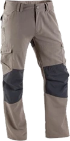
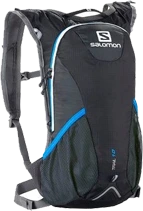

SIZE ⌄● ● ●

Take the path beyond the everyday.
Thoughtful essentials for mountain mornings,
long walks and new discoveries.




No products in the selected collection.
We believe good equipment lets you focus on the journey. Our collection brings together comfortable clothing and practical essentials for time outside. Find your own pace, travel light and enjoy the landscape.